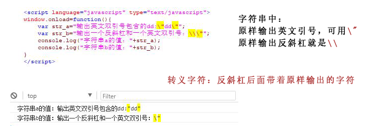

【JS新手教程】JS字符串里的转义字符
JS里用英文双引号或英文单引号作为字符串的开始和结束，如果字符串本身内部有英文双引号等这种字符，可以用转义字符控制输出。简短问答：
打印内容存在 单引号 双引号等特殊字符导致js报错
是JS字符串里有英文引号等吗，可以用JS的转义字符等处理，拼接出合适的内容。
例如，字符串里的英文引号，用\"反斜杠和英文引号表示。
--简短问答结束----
转义字符的语法就是：反斜杠后面带着原样输出的字符。
例如：原样输出英文引号，就是\"，原样输出反斜杠就是\\。
一些字符加上反斜杠后会表示特殊字符，而不是原字符本身，具体哪些特殊字符，可百度等方式查询。
测试代码：
<script language="javascript" type="text/javascript"> window.onload=function(){ var str_a="输出英文双引号包含的dd:\"dd\""; var str_b="输出一个反斜杠和一个英文双引号：\\\""; console.log("字符串a的值："+str_a); console.log("字符串b的值："+str_b); } </script>
图示：
